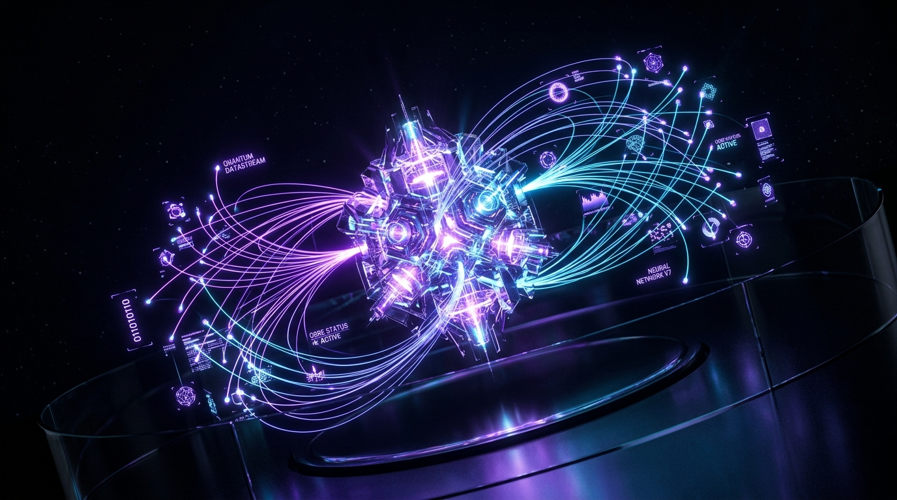
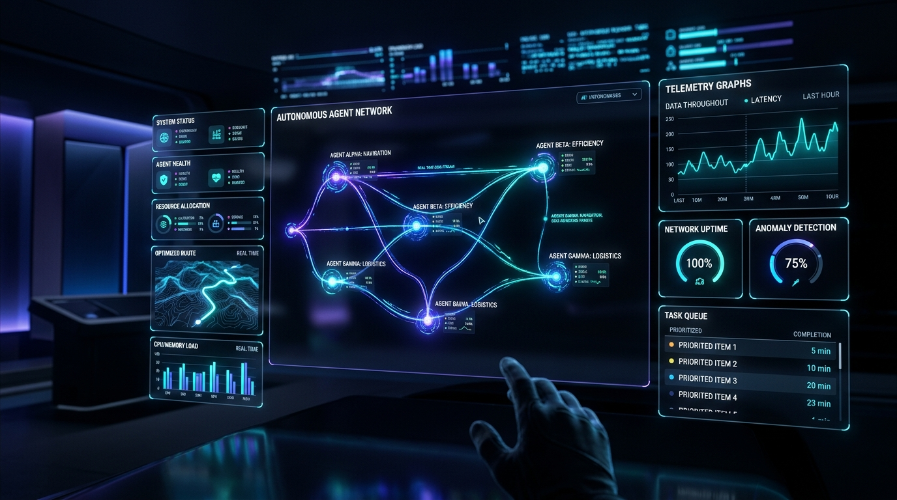

Next-Gen Autonomous Intelligence,
Orchestrated at Light Speed.
Deploy self-healing cognitive agent swarms, sub-millisecond episodic vector memory, and deterministic multimodal pipelines across a globally distributed neural mesh.

The Evolution of AI Systems:
From Monoliths to Swarms
Traditional AI infrastructure suffers from catastrophic token latency, memory drift, and single-point failures. Kinesis rewrites the stack from the silicon layer up with decentralized actor orchestration.
Centralized Monoliths
Single massive models processing blocking token streams through synchronous request/reply gateways.
Decentralized Swarms
Asynchronous, micro-specialized neural actors executing in parallel with zero-knowledge Byzantine consensus.
Autonomous Action
Direct hardware-enclave execution into physical robotics, trading execution engines, and sovereign clouds.
Engineered for Extreme Velocity.
Architected for Zero Failure.
Explore the six architectural pillars powering Kinesis. Every subsystem is decoupled, stateless, and secured with cryptographic hardware validation.
Sub-Millisecond Neural Mesh
Distributed peer-to-peer routing between compute clusters. Bypasses standard TCP handshakes with custom UDP tensor datagrams.
Infinite Episodic Memory
Hierarchical vector graphs that persist multi-agent dialogues, sensor history, and environmental states without catastrophic forgetting.
Byzantine Agent Consensus
Multi-agent voting protocols verify factual accuracy, code syntax, and execution safety before output is committed.
Multimodal Tensor Fusion
Simultaneously ingest vision, spatial LiDAR, audio, and high-frequency time series data into a unified latent space.
Zero-Trust TEE Enclaves
Hardware-isolated Intel SGX and AMD SEV enclaves guarantee that neither cloud operators nor attackers can read sensitive model weights or tenant data.
Autonomous Self-Healing
When an agent node experiences anomalous output or network partition, the swarm automatically isolates the actor and reroutes workflow state.
Inspect the Execution Pipeline
In Real Time
Click through the pipeline stages below to examine data transformation, latency profiles, and production SDK syntax at each neural checkpoint.
Ultra-Low Latency Multimodal Telemetry Ingestion
High-throughput binary packet parser ingestion engine. Compresses visual, audio, spatial kinematics, and natural language into normalized low-entropy latent tensors.
import { IngestionPipeline, StreamFormat } from '@kinesis/core'; // Establish sub-millisecond edge websocket link const pipeline = new IngestionPipeline({ edgePoP: 'sfo-zone-1', compression: 'zstandard-latent', encryption: 'xchacha20-poly1305' }); await pipeline.bindMultimodalStream({ vision: StreamFormat.H265_RAW, spatial: StreamFormat.QUATERNION_6DOF, audio: StreamFormat.OPUS_SPATIAL });
Interactive Benchmark &
ROI Calculator
Estimate your latency reduction, compute efficiency gains, and cost savings when switching from legacy monolithic LLMs to Kinesis swarm infrastructure.
Built for Mission-Critical
Autonomous Workloads
From physical robotics quadrupeds navigating subterranean tunnels to microsecond financial consensus, Kinesis powers the world's most demanding AI systems.

Sub-Millisecond Distributed Closed-Loop Kinematics
Orchestrating warehouse fleets, robotic quadrupeds, and autonomous arms with deterministic micro-second telemetry coordination and verifiable safety boundaries.
Trusted by the Teams Building
The Autonomous Frontier
Read how tier-1 research institutes and autonomous product teams deploy Kinesis in production.
Simple, Predictable Economics.
Zero Surprise Overage Fees.
Scale seamlessly from local development sandboxes to global sovereign multi-cloud deployments.
Developer Core
Perfect for testing, academic research, and prototyping local agent swarms.
Team & Swarms
For production startups and high-velocity engineering teams deploying live workloads.
Enterprise Fabric
Custom on-premise, sovereign cloud, and dedicated edge hardware clusters.
Frequently Answered
Architectural Questions
Everything you need to know about latency benchmarks, security guarantees, and deployment targets.